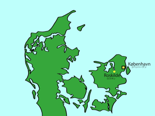

ロスキレは，コペンハーゲンから約30km西，そしてロスキレ湾のほとりに位置する町です．コペンハーゲン中央駅からは，電車で20分程度です．ロスキレは，デンマークの歴史において非常に重要な町で，特に中世には都として栄えていました．1995年に世界遺産に登録されたロスキレ大聖堂は，12世紀にアプサロン司教によって建設が始められ，その後歴代のデンマーク王室後継者が大聖堂に埋葬されてきました．実際に，大聖堂の中には，デンマークの初代女王マグレーデ１世や建築王として有名なクレスチャン４世などの棺が安置されています．
しかしながら，現在のデンマーク女王・マグレーデ２世の両親にあたる，フレズレク９世そしてイングリズ王妃は「自分たちは王室後継者ではあるが，一般のデンマーク人と同等である」といった解釈から，自分たちをロスキレ大聖堂の外部に埋葬することを望み，結果として現在フレズレク９世とイングリズ王妃は大聖堂の外部に埋葬されています．